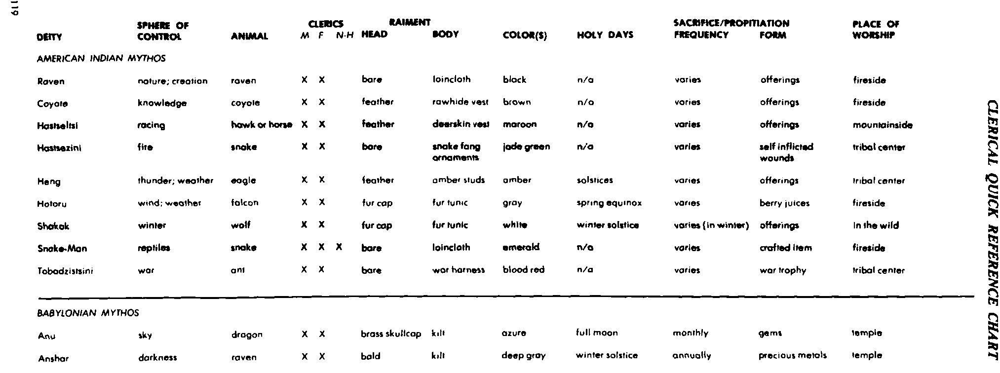
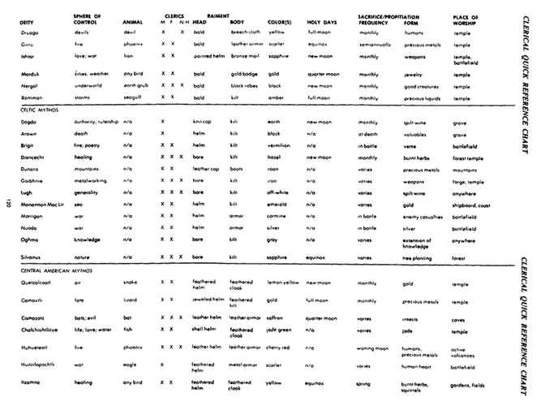
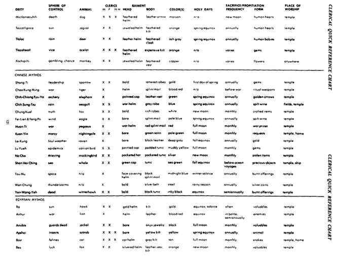
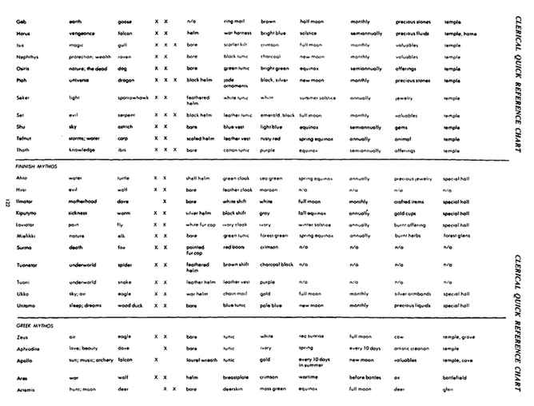
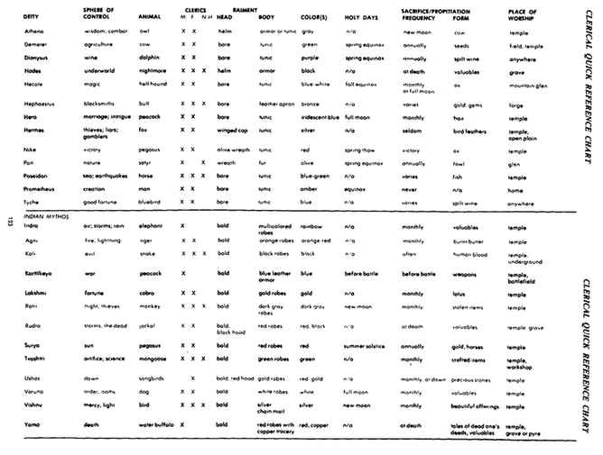
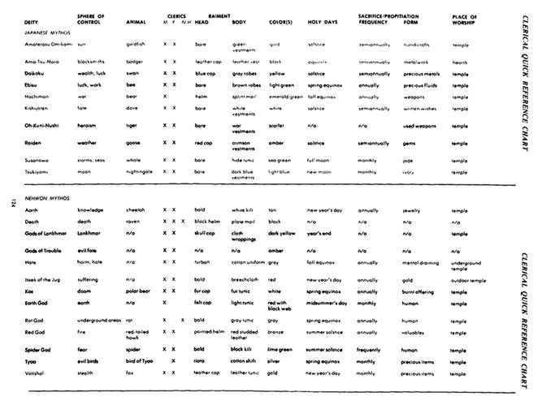
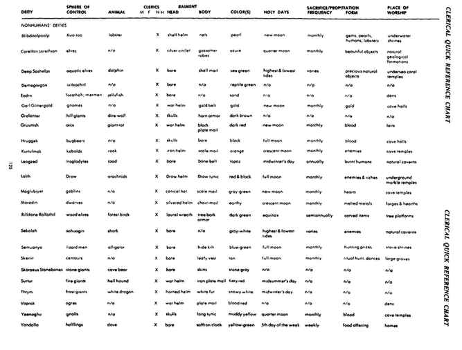
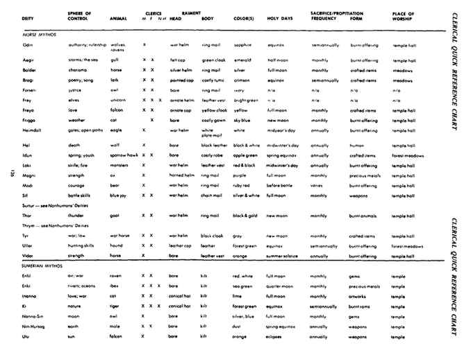

完整牧师速查原表（英文扫描）
以下连续保留原表全部八页。横向表已旋转正向；第一幅是右栏，其余为整页。扫描本身为英文，不计作中文译表。








上一节：苏美尔神话 · Sumerian Mythos
下一节：附录四：进一步参考 · Appendix IV: Further Reference
以下连续保留原表全部八页。横向表已旋转正向；第一幅是右栏，其余为整页。扫描本身为英文，不计作中文译表。








上一节：苏美尔神话 · Sumerian Mythos
下一节：附录四：进一步参考 · Appendix IV: Further Reference